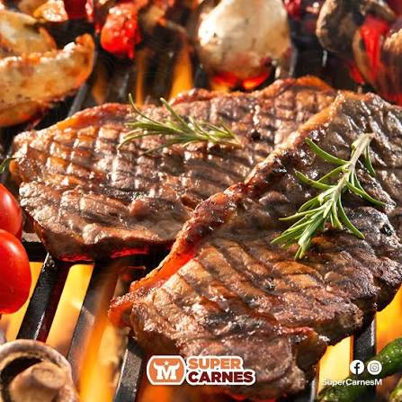

Home
Asado Recipe

Description[ESP]
El asado a la parrilla es un plato representativo de la gastronomía paraguaya y argentina; sin embargo, cada país
tiene su modo y técnicas para prepararlo. Se trata de un corte vacuno que se cocina a la parrilla, y por lo
general, se acompaña con sopa paraguaya, mandioca o chipa guazú. Aprende con nosotros las diversas técnicas para
que te salga a la perfección.
Ingredients
- Tapa Cuadril
- Costilla Ancha
- Chorizo Parillero
- Sal gruesa al gusto
Steps
- Lo primero que se debe hacer es encender el fuego, bajo indicaciones antes descritas en el apartado
anterior.
- Por otro lado, sazonar la carne con sal por ambos lados.
- Una vez bien dispuestas y esparcidas las brasas, colocar la carne.
- Colocar la morcilla y el chorizo en una zona donde no haya exceso de calor.